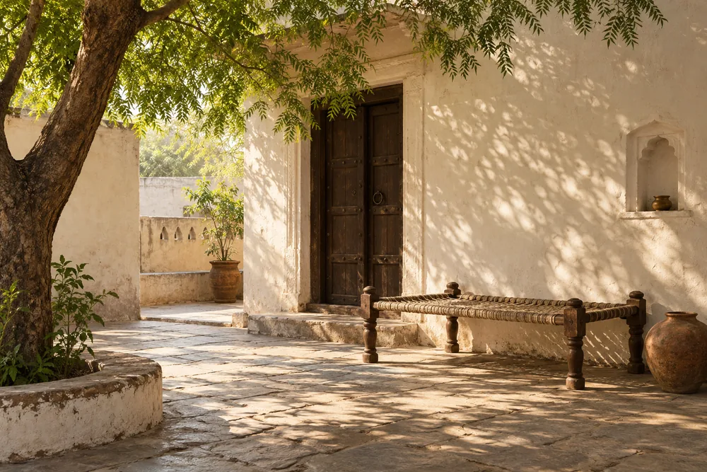
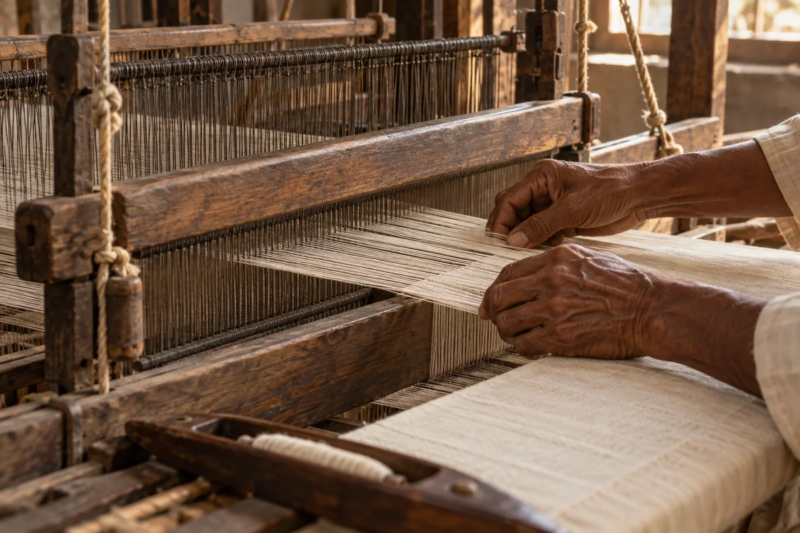
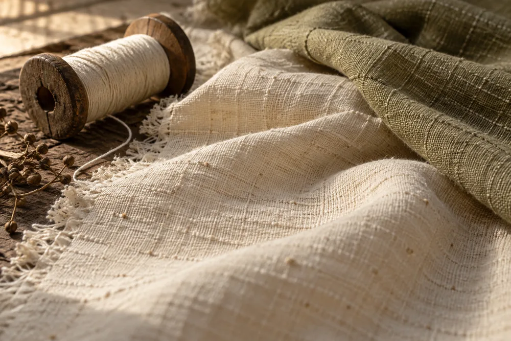
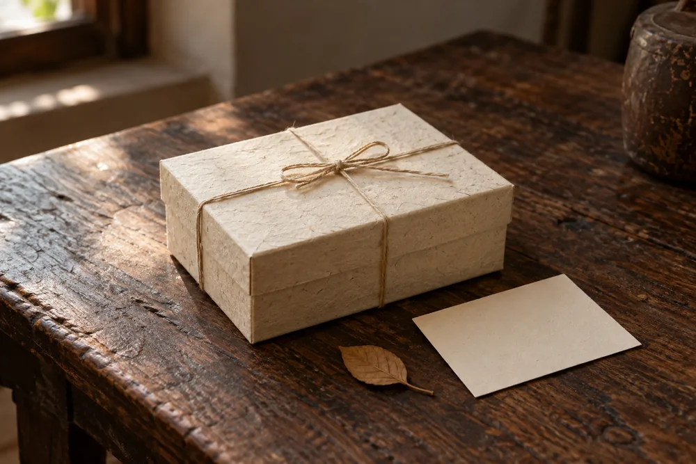

ISHIRTS & EVERYDAY LAYERS
Everyday rituals
For the quiet beauty of an ordinary day.
Explore collectionA LITTLE CLOSER TO OUR ROOTS
To the places we come from.
To the hands that make.
To the people we call our own.

OUR PHILOSOPHY
Every village has its pradhan: the one people trust, who stands up for the community.
We took the name because that is the role we want to play for India's village artisans. We carry their craft to people who will value it, and bring a fair living back home.
Rooted in where we come from.
Made for where life takes us.
Our story starts with village artisans and the skills they carry forward.
A familiar sensibility, finding a place in the way we live today.
Clothing for ordinary days, shared occasions and meaningful gestures.

THE HANDS BEHIND
A thread guided into place. A detail considered. A skill passed from one pair of hands to another.
We want to make room for these stories—the people, their villages and the craft that connects us.
Our purpose is to support village artisans by bringing their work to a broader market. Their knowledge and creativity are the starting point for Pradhan by Panchayat.
CHAPTERS OF EVERYDAY LIFE
Unhurried mornings. Familiar faces.
A little something for someone you love.

ISHIRTS & EVERYDAY LAYERS
For the quiet beauty of an ordinary day.
Explore collectionKURTAS & NEHRU JACKETS
For coming together. And feeling at home.
Explore collection
IIICRAFT & THOUGHTFUL GIFTING
A little of your heart, wrapped with care.
Explore collectionFOR THE PEOPLE WE CALL OUR OWN
For the father who asks for nothing. The person who has always been there. A thoughtful piece, a few words from you, a reason to smile.
Explore thoughtful giftingDear someone special,
Some things are chosen
with you in mind.
With warmth,
Pradhan
From our village, to your world.
Back to the beginning ↑